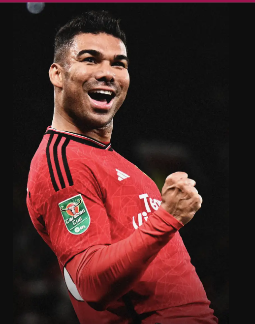

My hobbies
I love to put in my best at work, but when I am not working, I love to kick back, relax and have a good time. That way, when i return to work, i can come back refresh, revived and ready to go.
Below I have put together a list of my top favorite hobbies
Comedy movie binging
Speaking
I feel passion crossing through my veins when I speak, I chersih every moment and opportunity i get.
Reading
Reading books that share light on the mind is one of my favorite hobbies.
Watching Football
